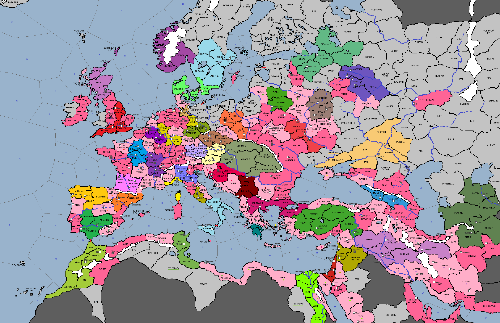

<== | 0 | | 1 | | 2 | | 3 | ==>

Вальденсы
Вальденсы - религиозное движение в западном христианстве. Апеллируя к идеалам раннего христианства, вальденсы ратовали за ликвидацию частной собственности, апостолическую бедность и взаимопомощь, а также мирскую проповедь и свободу чтения Библии. [появляется Ересь Вальденсов в провинциях Прованс, Овернь и г.Лион]
· Половецкая армия во главе с полководцем Аепой наносит поражения варварам в Диком Поле и Запорожье, устанавливая контроль над территориями, непосредственным образом примыкающим к владениям киевского князя.
· Франция и Бургундия заключают союзный договор.
· Императором Священной Римской империи в 1125 г. был избран герцог Саксонии Лотарь II.
· Император Византии Иоанн II из династии Комнинов трагически погибает в сутолоке, возникшей при проведении синклита предстоятелей православной церкви при попытке учреждения в Константинополе Вселенской патриархии...ом
· Силы Фатимидской державы разбивают варваров в землях Эль-Вахата.
· Подвластное Сельджукам государство Фарс поднимает мятеж против сюзерена и обретает независимость. Огузская держава погружается в пучину кризиса, отягощенного разрушительным наводнением в Лурестане и отказом части податного населения платить налоги в казну султана.
· Тунис совершает экспедицию в Сев.Сахару, где разбивает силы берберов. Однако, печальная новость доходит из столицы: при невыясненных обстоятельствах погибает 15-ти летний эмир Аль-Хасан ибн Али и на этом прерывается правление династии Зиридов. Страна сталкивается с проблемой династического кризиса…
· Нашествие саранчи в 1125 году опустошило сельскохозяйственные районы, кормившие Венецианскую республику.
· Киевская и смоленская ветви Рюриковичей заключают между собой военный союз, видя активность половцев на южных границах русских земель.
· А правящие дома Кастилии и Арагона связали свои страны дин.браком – король Арагона Альфонсо I Воитель взял в жены дочь короля Кастилии Санчу.
· Папа Гонорий II заключает военный союз со своей родной страной, в надежде, что Ломбардия станет крепким щитом, способным защитить Престол Св.Петра.
· Эпидемия чахотки накрывает центральные районы Венгрии…
· Король Англии Генрих I Боклерк увлекся оккультными науками по влиянием ганзейцев, основавших в Лондоне свою факторию.
· Эпидемии не обошли стороной и Марокко. В эти годы умерло свыше 175 тысяч жителей страны державы Альморавидов, съевших последние запасы продовольствия. В ближайшие годы страну ожидает жесточайший голод. Эмир Али ибн Юсуф заключает союз с Кордовой, в надежде решить проблему с поставкой продовольствия за счёт северного собрата.